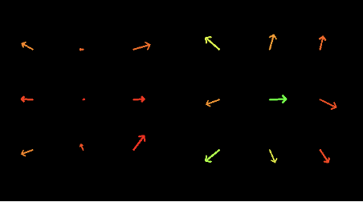

Visible Touch: Rendering Contact for Visuomotor Policies
Submitted to CoRL 2026
Abstract
Integrating contact information into visuomotor policies remains an open problem. Touch is essential to robust manipulation, yet most modern policies, including pretrained vision-language-action (VLA) models, operate from vision and proprioception alone. Existing approaches to closing this gap require specialized tactile hardware, add separate tactile encoders, or commit to non-image policy backbones, all incompatible with the modern paradigm of image-conditioned policies built on pretrained 2D visual representations. Our key insight is that the bottleneck is not the contact information itself, but how it is delivered: when contact signals are exposed in the same spatial frame as the scene the policy already attends to, they become directly usable by any image-conditioned policy without architectural changes. We operationalize this insight in Visible Touch, paired with a custom low-cost magnetic contact sensor that is open-sourced and fabricated from off-the-shelf parts via a parametric CAD-to-mold pipeline. Across the LIBERO benchmark, Visible Touch improves BC-Transformer success rates by 16 percentage points on average, with controlled comparisons showing that how contact is represented matters more than what contact information is provided. The pattern holds when fine-tuning pretrained VLAs: miniVLA on LIBERO gains 29 points on average, and π0.5 on four real-world contact-rich tasks gains 30 points with our custom sensor.
Sample Policy Rollouts (3x Speed)
The clips below show successful task rollouts and the corresponding contact-overlay renderings used by Visible Touch. Overlay videos make the tactile signal visible in the same RGB frame consumed by the policy.
Cube
9-Arrow Overlay
Put Mug in Dishwasher
Rollout Success
9-Arrow Overlay
1-Arrow Overlay
Binbar Overlay
Tac-View
Transfer Tube
Rollout Success
9-Arrow Overlay
Plug Charger
Rollout Success
9-Arrow Overlay
Method
Visible Touch renders tactile contact into the policy's existing RGB observation stream. A low-cost magnetic tactile sensor or simulated contact source provides per-element 3-axis measurements. These measurements are projected into camera coordinates using robot forward kinematics and calibrated camera parameters, then alpha-blended onto the image as contact overlays. The result is a drop-in input augmentation for image-conditioned policies, including pretrained VLAs.
The rendering pipeline does not require calibration to physical force units. It only needs the sensor geometry, camera extrinsics, and a visual scale factor so typical contact events are visible as arrows, markers, or bars. Because the augmented image preserves the original image resolution, channel count, and pixel range, no additional tactile encoder, state vector dimension, or policy architecture change is required.

Figure 1: Overview of Visible Touch. A low-cost magnetic contact sensor captures per-taxel contact, which we render as an image-space overlay on the policy's RGB observations. The augmented images are drop-in inputs for fine-tuning pretrained VLAs, requiring no architectural changes. Contact overlays improve average task success by +28.9% on LIBERO fine-tuning suites and +30.3% on real-world contact-rich manipulation tasks.
Key Findings
Image-space contact improves BC-Transformer across camera settings.
In LIBERO simulation, Visible Touch improves over plain RGB baselines in both 1-view and 2-view settings. The main-paper summary shows a roughly 16-point improvement in the 2-view setting, and the largest gain appears on LIBERO_LONG (+33.7pp), where contact events are most diagnostic of task progress.
| Suite | 1-view (agentview) | 2-view (agentview + wrist) | |||
|---|---|---|---|---|---|
| Plain | Visible Touch | Plain | Proprio | Visible Touch | |
| OBJECT | 90.7 ± 4.4 | 95.0 ± 0.9 | 82.8 ± 7.0 | 80.0 ± 2.0 | 98.2 ± 1.2 |
| GOAL | 79.3 ± 3.2 | 91.7 ± 0.3 | 86.8 ± 4.1 | 81.5 ± 4.3 | 92.8 ± 2.5 |
| SPATIAL | 79.0 ± 2.0 | 90.5 ± 0.4 | 84.8 ± 4.0 | 80.0 ± 1.4 | 92.3 ± 2.7 |
| LONG | 41.8 ± 6.1 | 63.8 ± 1.2 | 52.8 ± 2.1 | 42.8 ± 5.1 | 86.5 ± 2.3 |
| Average | 72.7 | 85.2 | 76.8 | 71.1 | 92.5 |

Figure 3: BC-Transformer on LIBERO across camera configurations (n=3 seeds, error bars are std). Orange bars show Visible Touch (ours); gray bars show plain baselines; blue bars show the Proprio baseline that receives identical contact information to Visible Touch. Visible Touch consistently improves over plain images in both 1-view and 2-view, with the largest gain on LIBERO_LONG (+33.7pp 2-view).
The same pattern transfers to miniVLA.
Overlay-pretrained miniVLA reaches 64.0% on LIBERO_90 versus 52.6% for the released Stanford baseline. During suite-level fine-tuning, Visible Touch improves every suite and raises the best-observed average from 50.9% to 79.8%.
| Method | Pretraining | Fine-tuning (best-observed) | |||||
|---|---|---|---|---|---|---|---|
| LIBERO_90 | LIBERO_90 (VQ8, hist=2) | OBJECT | GOAL | SPATIAL | LONG | Avg. | |
| Baseline | 52.6% | 82.0% | 51.0% | 48.5% | 71.5% | 32.5% | 50.9% |
| Visible Touch | 64.0% | 86.3% | 73.5% | 80.5% | 94.0% | 71.0% | 79.8% |
Additional miniVLA comparison: The VQ8/history-2 result uses the architecture from the headline LIBERO_90 result in the original miniVLA work, showing that contact overlays remain effective under a different miniVLA configuration.
Overlay benefits scale with grasp structure.
Gains are largest when tasks require multiple grasps or longer contact-rich trajectories. In BC-Transformer, multi-grasp tasks show a +43.3pp improvement. The same grasp-structure pattern appears in miniVLA on LIBERO_90.


Figure 4: Success rates of Visible Touch (Avg. Arrow overlay) over plain baselines, bucketed by gripper-close events. Tasks with no grasps show no benefit; single-grasp tasks show modest gains; multi-grasp tasks show the largest gains. The pattern holds across both BC-Transformer (a) and a pretrained miniVLA on LIBERO_90 (b).
Overlay granularity depends on the contact source.
In simulation, Avg. Arrow is the strongest overlay on average, while Binbars remains competitive and Multi-arrows underperforms on LIBERO_LONG. This suggests that excess spatial detail can introduce visual clutter when simulated contacts appear at inconsistent mesh locations.
| Visible Touch variant | OBJECT | GOAL | SPATIAL | LONG | Avg. |
|---|---|---|---|---|---|
| Multi-arrows | 94.3 ± 5.6 | 93.8 ± 0.5 | 90.2 ± 1.0 | 76.2 ± 2.7 | 88.6 |
| Avg. Arrow | 98.5 ± 0.5 | 94.0 ± 1.0 | 93.5 ± 1.3 | 86.5 ± 1.6 | 93.1 |
| Binbars | 98.3 ± 0.3 | 92.7 ± 0.7 | 94.5 ± 0.5 | 78.8 ± 2.6 | 91.1 |
Visible Touch transfers to real-world contact-rich manipulation.
On the xArm7 real-world setup, Multi-arrows is strongest on every reported sub-task. It reaches 24/30 on Transfer Tube Pick and 16/30 on Transfer Tube Insert, compared with 5/30 and 0/30 for the baseline. On Plug Charger, the hardest task, Multi-arrows is the only condition that completes any inserts.


Figure 5: Real-world experimental setup. (a) Contact-rich manipulation tasks: Lift, Transfer Tube, Put Mug in Dishwasher, and Plug Charger. (b) Example contact overlays rendered onto external and wrist camera views.
| Method | Lift | Transfer Tube | Put Mug in Dishwasher | Plug Charger | ||||
|---|---|---|---|---|---|---|---|---|
| Pick | Pick | Insert | Pull | Pick | Place | Pick | Insert | |
| Baseline | 20/30 | 5/30 | 0/30 | 21/30 | 11/30 | 11/30 | 9/30 | 0/30 |
| Tac-View | 16/30 | 9/30 | 0/30 | 22/30 | 18/30 | 16/30 | 17/30 | 0/30 |
| Visible Touch: Binbars | 23/30 | 10/30 | 1/30 | 24/30 | 15/30 | 15/30 | 9/30 | 0/30 |
| Visible Touch: Avg. Arrow | 23/30 | 17/30 | 3/30 | 23/30 | 14/30 | 12/30 | 13/30 | 0/30 |
| Visible Touch: Multi-arrows | 24/30 | 24/30 | 16/30 | 28/30 | 22/30 | 21/30 | 18/30 | 2/30 |

Q2. Image-space overlays outperform separate-stream tactile rendering.
Tac-View receives the same contact arrows as Visible Touch, but places them in a separate image instead of compositing them onto the RGB camera view. This tests whether the gain comes from contact information alone or from where that information is delivered. In the real-world results, direct image-space overlays perform best because contact appears in the same visual frame the policy already uses for spatial reasoning.
Appendix Tables
The tables below collect the appendix details from the current paper draft: hardware costs, training settings, per-task diagnostics, seed-level simulation results, miniVLA recipe comparisons, and real-world data/evaluation parameters.
Hardware bill of materials.
| Component | Spec | Qty | Unit price | Subtotal |
|---|---|---|---|---|
| XP-565 silicone elastomer | 10:1 base/activator | 10 g | $0.05/g | $0.50 |
| Neodymium magnets | 2 mm x 1 mm | 9 | $0.07/ea | $0.63 |
| PLA filament (molds + spacer) | - | 20 g | $0.013/g | $0.26 |
| Loctite SF 770 | - | 1 ml | $0.50/ml | $0.50 |
| Loctite 406 | - | 0.5 ml | $1.65/ml | $0.83 |
| Anti-slip skin | - | 1 ml | $0.10/ml | $0.10 |
| Machine screws | M2x6 | 4 | $0.20/ea | $0.80 |
| Sensor pad subtotal | $3.62 | |||
| Magnetometer array PCB | 3x3 Allegro A31031 | 1 | ~$20 | ~$20 |
| Microcontroller board | ESP32-based | 1 | ~$20 | ~$20 |
| Flexible flat cable | 10 pin 0.5 mm, 15 mm length | 1 | $1/ea | $1 |
| Electronics subtotal | ~$41 | |||
| Total (fully assembled) | <$50 | |||
BC-Transformer training configuration.
| Component / Hyperparameter | Value |
|---|---|
| Visual backbone | ResNet-18 (random init, remove_layer_num=4, no stride change) |
| Language fusion | FiLM conditioning on visual features |
| Language encoder | 1-layer MLP (input 768, hidden 128, output 128) |
| Transformer layers | 4 |
| Hidden / embed dimension | 64 token embed; MLP hidden 256 |
| Attention heads | 6 (per-head dim 64) |
| Action head | GMM head, 2 MLP layers, hidden 1024, 5 modes, softplus, min_std=1e-4 |
| Optimizer | AdamW, beta1=0.9, beta2=0.999 |
| Learning rate | 1e-4 cosine annealing to eta_min=1e-5 |
| Weight decay / dropout | 1e-4 / 0.1 transformer dropout |
| Batch size / epochs | 32 / 20 |
| Sequence length | 10 frames (transformer_max_seq_len=10, seq_len=10) |
| Image resolution | 128 x 128 |
| Data augmentation | Batch-wise color jitter + translation augmentation |
| Lifelong configuration | Multitask; eval_in_train=false |
LIBERO task diagnostics.
| Suite | Task | Plain 2v | Visible Touch 2v | Δ |
|---|---|---|---|---|
| OBJECT | butter to basket | 48% | 98% | +50% |
| GOAL | wine to top of cabinet | 83% | 100% | +17% |
| SPATIAL | bowl on ramekin to plate | 62% | 93% | +32% |
| LONG | cheese + butter to basket | 8% | 95% | +87% |
| Feature | Raw Pearson | Partial, controlling for headroom | ||
|---|---|---|---|---|
| r | p | r | p | |
| Headroom | +0.924 | < 1e-3 | - | - |
| #grasps | +0.633 | < 1e-3 | -0.094 | 0.562 |
| Trajectory length | +0.458 | 0.003 | -0.368 | 0.019 |
| %contact | +0.360 | 0.022 | +0.214 | 0.186 |
| #contact onsets | +0.329 | 0.038 | -0.571 | < 1e-3 |
| Suite | 1-view Plain | 2-view Plain | Δ (2v - 1v) |
|---|---|---|---|
| OBJECT | 90.7 | 82.8 | -7.9 |
| GOAL | 79.3 | 86.8 | +7.5 |
| SPATIAL | 79.0 | 84.8 | +5.8 |
| LONG | 41.8 | 52.8 | +11.0 |
| Average | 72.7 | 76.8 | +4.0 |
Seed-level BC-Transformer results.
| Condition | Suite | Seed 12345 | Seed 23456 | Seed 34567 | Mean | SD |
|---|---|---|---|---|---|---|
| Plain | OBJECT | 84.5 | 73.5 | 90.5 | 82.8 | 8.6 |
| Plain | GOAL | 90.0 | 89.5 | 81.0 | 86.8 | 5.1 |
| Plain | SPATIAL | 90.5 | 82.0 | 82.0 | 84.8 | 4.9 |
| Plain | LONG | 50.5 | 52.5 | 55.5 | 52.8 | 2.5 |
| Proprio | OBJECT | 82.5 | 77.5 | 80.0 | 80.0 | 2.5 |
| Proprio | GOAL | 84.0 | 75.5 | 85.0 | 81.5 | 5.2 |
| Proprio | SPATIAL | 82.0 | 79.0 | 79.0 | 80.0 | 1.7 |
| Proprio | LONG | 50.0 | 38.5 | 40.0 | 42.8 | 6.3 |
| Visible Touch | OBJECT | 99.0 | 99.0 | 96.5 | 98.2 | 1.4 |
| Visible Touch | GOAL | 96.0 | 92.5 | 90.0 | 92.8 | 3.0 |
| Visible Touch | SPATIAL | 96.0 | 91.5 | 89.5 | 92.3 | 3.3 |
| Visible Touch | LONG | 84.0 | 86.0 | 89.5 | 86.5 | 2.8 |
miniVLA recipe comparison.
| Suite | Recipe | Baseline | Visible Touch | Δ |
|---|---|---|---|---|
| OBJECT | b8 1-epoch | 47.0% | 57.5% | +10.5% |
| OBJECT | DDP-4 b16 cosine | 51.0% | 73.5% | +22.5% |
| GOAL | b8 1-epoch | 48.5% | 74.0% | +25.5% |
| GOAL | DDP-4 b16 cosine | 37.4% | 80.5% | +43.1% |
| SPATIAL | 2-phase baseline | 71.5% | 94.0% | +22.5% |
| SPATIAL | DDP-4 b16 cosine | 55.0% | 87.5% | +32.5% |
| LONG | b8 1-epoch | 32.5% | 58.0% | +25.5% |
| LONG | DDP-4 b16 cosine | 26.0% | 71.0% | +45.0% |
Real-world fine-tuning and evaluation details.
| Setting | Value |
|---|---|
| Base checkpoint | pi05_droid |
| Fine-tuning method | LoRA (backbone r=16, action expert r=32) |
| LoRA targets | Attention and FFN projections |
| Image resolution | 224 x 224 x 3, 3 cameras |
| Action horizon | 10 steps (1.0 s at 10 Hz) |
| Batch size | 8 |
| Optimizer | AdamW |
| Gradient clipping | Global norm ≤ 1.0 |
| LR schedule | Cosine with linear warmup |
| Warmup / peak LR / final LR | 500 steps / 1e-4 / 1e-5 |
| Decay steps | 20,000 |
| EMA | Disabled |
| Maximum training steps | 20,000 |
| Checkpoint interval | 2,000 steps |
| Early stopping | <0.5% relative improvement in the 1000-step rolling-window mean loss for two consecutive checks, after step 3,000 |
| Task | n | Length (steps) | Duration (s) | Min/Max (steps) |
|---|---|---|---|---|
| cube | 100 | 131 ± 86 | 13.1 ± 8.6 | 90 / 972 |
| tube | 97 | 190 ± 14 | 19.0 ± 1.4 | 166 / 238 |
| charger | 100 | 238 ± 28 | 23.8 ± 2.7 | 182 / 329 |
| dishwasher | 100 | 281 ± 32 | 28.1 ± 3.2 | 236 / 554 |
| All | 397 | 210 ± 74 | 21.0 ± 7.4 | 90 / 972 |
| Task | Step budget | Action scale |
|---|---|---|
| Lift | 150 | 0.8 |
| Transfer Tube | 400 | 0.4 |
| Put Mug in Dishwasher | 600 | 0.8 |
| Plug Charger | 600 | 0.6 |
Hardware
The real-world experiments use a low-cost magnetic tactile sensor with a 3x3 taxel grid per finger. Forces deform a silicone elastomer pad embedded with permanent magnets, and a matching array of 3-axis magnetometers records the magnetic field changes at 50 Hz. The sensor has a 4 mm profile and separates reusable electronics from the replaceable elastomer contact pad.
A parametric CAD-to-mold pipeline generates multi-stage 3D-printable casting molds from geometry and magnet-layout inputs. In the updated appendix, 397 of 400 collected demonstrations pass the post-acceptance and idle-trim filters. Demonstration lengths range from 13.1 seconds on cube to 28.1 seconds on dishwasher, with an across-task mean of 21.0 seconds.

Figure 2: Hardware system. (a) Visuo-tactile setup: UFactory xArm7 with two RealSense cameras and two tactile sensors mounted on the gripper fingers. (b) Custom tactile sensor with anti-slip skin. (c) Internal structure of the tactile sensor. (d) Our parametric CAD-to-mold pipeline: CAD-generated alternative casting molds (top) and the 3D-printed molds with the fabricated sensor pads (bottom). (e) Physical characteristics of the sensor.
Conclusion
Visible Touch renders contact information as image-space overlays on RGB observations, requiring no architectural changes. Across LIBERO, image-space overlays improve BC-Transformer success over plain images and a matched proprioceptive baseline. The pattern transfers across architectures: miniVLA gains 29% on LIBERO fine-tuning, and π0.5 gains 30% across four real-world contact-rich tasks. Visible Touch provides a practical path for adding contact awareness to image-conditioned policies, including pretrained VLAs.